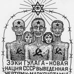

Prisoner: Lev Kopelev
“In prison we used to be afraid of informers and talked about them in whispers. Here in the camp we spoke of them out loud. The lowest of all the minions of the mighty state, as helpless and humiliated as the rest of us, and often as falsely accused and as unfairly sentenced, they were nevertheless the indispensable cogs of the cruel punitive machine. They served for the sake of the little handouts the machine threw their way, and they served out of fear.”

Criminal Tattoo
Ethno-National Conflict
The multi-national and multi-ethnic composition of the Gulag fostered further conflict. Prisoners often clung together in ethno-nationally homogenous groups—Russian, Ukrainian, Estonian, Chechen—and conflicts often emerged among these groups. Some prisoners, especially from western Ukraine and the Baltics, had been part of fiercely nationalist partisan armies that fought against the Soviets during and after World War II. Upon arrival in the Gulag, many took out their frustrations especially on Russian and Jewish prisoners, whom they blamed for their subjugation. Anti-Semitism was common among nearly all national groups, who wrongly deemed all Jews communists. As Joseph Scholmer recalled, “Whenever conversation in the camps turns to the subject of what will happen when the Soviet Union collapses, the enemies of the Jews, whether Lithuanians, Ukrainians, or Poles, always say the same thing: ‘You can be sure of one thing, there won’t be a single Jew left alive by the time we’ve finished.’”